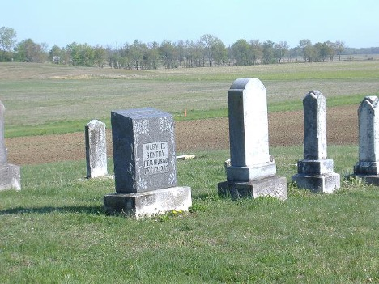

Cemetery Details
Polk-Gentry Cemetery

Location & Directions
From Boonville, proceed East on Highway 62 and continue past the sharp curve to the left at approximately five miles from Boonville. Before the next sharp curve to the right, continue straight down to the intersection of Degonia Road and Franz Road. Continue straight on Franz Road until it stops and turn right onto Shelton Road. Continue until Moss Road shows on your left. Turn left onto Moss Road and proceed until Polk Cemetery Lane shows on your left. Follow Polk Cemetery Lane through the field until you reach the cemetery at the top of the hill. This cemetery sits in the middle of a field and cannot be seen from any paved roads.
Burial Information
- Austill, Annis — died Aug. 9, 1921
- Barnhill, Carlton B. — died Feb. 6, 1892
- Barnhill, George — died Nov. 4, 1867
- Barnhill, James W. — Dec. 23, 1851-Feb. 13, 1913
- Carey, Ebenezer — died Oct. 4, 1888
- Combs, Daniel — 1878-1898
- Leach, Bernice L. — Jul. 16, 1919-Jun. 19, 2001
- Leach, Glenn D. — Sep. 18, 1918-Aug. 18, 1987
- Schaaf, Henrietta — died Oct. 28, 1910
- Wallace, I. Link — Sep. 8, 1862-May 8, 1916